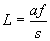
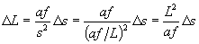

Upplösningen i denna mätning beror på hur noggrannt s kan mätas
Vi utgår från  och differentierar den (för att se hur ett fel i s fortplantar sig till L)

Välj exvis L=100m, a=0.5m och f=0.2m. s kan med modern PSD (PositionSensitiveDetector) mätas med 100nm noggrannhet, vilket ger oss cm-noggrannhet. Med en mer normal PSD kommer vi ändå ner till dm. Men felet ökar snabbt med avstånd!!